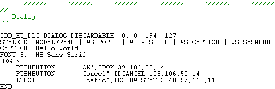
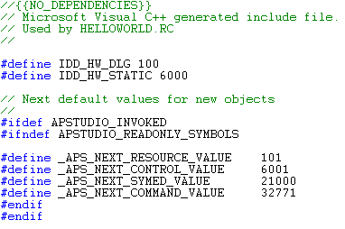
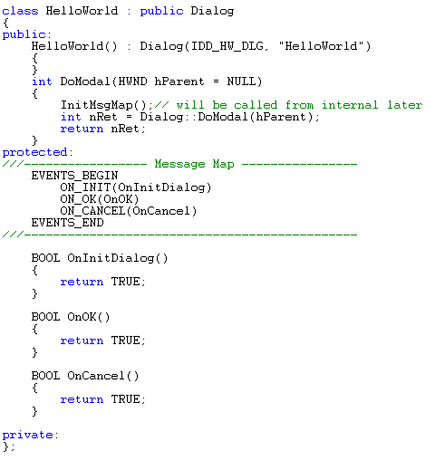
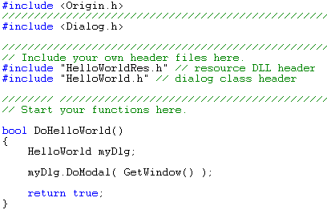

Introduction to Accessing Dialog Builder Resources with Origin C
Before you can access Dialog Builder resources with Origin C you must first build the resources using Microsoft Visual C++. See the topic Create a "Hello World" Dialog and the sections Creating a Microsoft Visual C++ Resource-only DLL and Additional Resource Topics for more information on creating Dialog Builder resources. Once the resources have been created and are made available in a resource-only DLL they can be accessed in Origin with Origin C.
Once you build your resource-only DLL in Visual C++, you'll need to develop Origin C code to access your resource in Origin. Additionally, you'll need to develop Origin C code to handle the events associated with your resource. The Origin Dialog AppWizard creates the following resource, source, and header files to which you should add the C code to access the resources and to handle resource events.
- <ProjectName>.rc - Contains Microsoft Visual C++ resource commands used by Visual C++ to define and build the resource-only DLL. The resource file is used only by Microsoft Visual C++ and once compiled into a resource-only DLL it is not needed by Origin. Do not manually edit or add anything to this file.

- <ProjectName>Res.h - Contains definitions for all resource ID strings used by Microsoft Visual C++ to build the resource-only DLL and used by Origin to access the resource in Origin with Origin C. This is the Symbol include header file.

- <ProjectName>.h</span> - Contains Origin C template code for classes implementing the dialog, tabbed dialog, or wizard (resource). Includes template code used to access the resource and to handle resource events (a message map) in Origin with Origin C. Most C code developed by users to access resources and handle resource events will be added here.

- <ProjectName>.cpp (or .c)- Contains [javascript:kadovTextPopup(this) Origin C template code to instantiate an instance of the main dialog] class implemented in <ProjectName>.h (thereby launching the resource in Origin). Some C code developed by users to access resources may be added here.

Note:The text <ProjectName> above is the name of the Microsoft Visual C++ project chosen when creating a new Visual C++ project by launching the Origin Dialog AppWizard.
The sections that follow discuss these files and Origin C programming requirements in more detail.